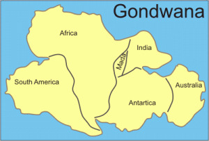

- What is Wildlife?
-
Wildlife traditionally refers to the animals that have not been domesticated by humans, but now it broadly refers to all the wild animals, plants and other living organisms.
- Wildlife in Australia
-
It is not the strongest of the species that survives, nor the most intelligent that survives. It is the one that is the most adaptable to change, that lives within the means available and works co-operatively against common threats.
- Charles Darwin
Australia has been geographically isolated from rest of the world for a long time. Due to which most of its flora and fauna is endemic which means, it can not be found anywhere else in the world. It is also due to a number of habitats in Australia, including deserts, mountains, rainforests, bushlands, and reefs, its wildlife is unique to Australia.
Australia is a very diverse country and home to a large amount of plants and animal species. There are thousands of different native species that can be found here. These include some of the most unusual creatures of Earth. - Origin and History
-

The Supercontinent Gondwana, which comprised of today's Africa, South America, India, Antarctica and Australia, began to split apart 140 million years ago. Around 50 million years ago, Australia separated from it and started drifting northwards away from Antarctica. Because of the drift, Australia was isolated from the rest of the world for a long time. Its climate got warmer and arid conditions developed. This lead to the evolution of various species of flora and fauna and became endemic to Australia.